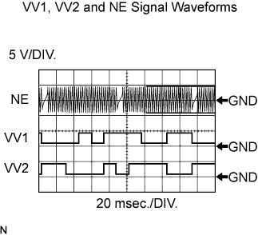
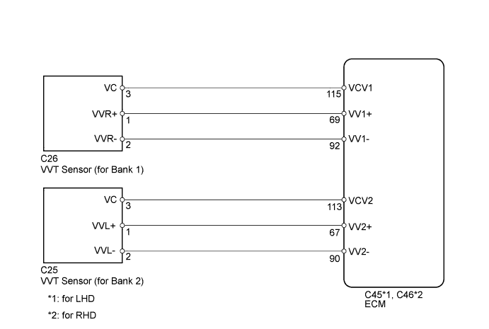
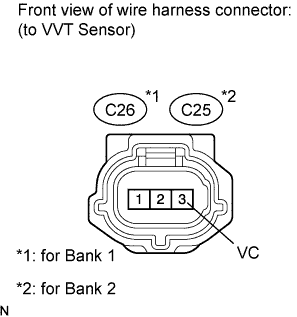
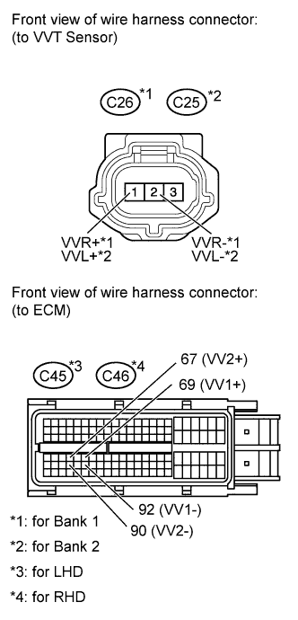

DTC P0340 Camshaft Position Sensor Circuit Malfunction |
DTC P0342 Camshaft Position Sensor "A" Circuit Low Input (Bank 1 or Single Sensor) |
DTC P0343 Camshaft Position Sensor "A" Circuit High Input (Bank 1 or Single Sensor) |
DTC P0345 Camshaft Position Sensor "A" Circuit (Bank 2) |
DTC P0347 Camshaft Position Sensor "A" Circuit Low Input (Bank 2) |
DTC P0348 Camshaft Position Sensor "A" Circuit High Input (Bank 2) |
| DTC Code | DTC Detection Condition | Trouble Area |
| P0340 P0345 | When either condition below is met:
|
|
| P0342 P0347 | The output voltage of the VVT sensor is below 0.3 V for 4 seconds (1 trip detection logic). | |
| P0343 P0348 | The output voltage of the VVT sensor is higher than 4.7 V for 4 seconds (1 trip detection logic). |
 |
| Item | Content |
| Terminal | NE+ - NE- VV1+ - VV1- VV2+ - VV2- |
| Equipment Setting | 5 V/DIV. 20 msec./DIV. |
| Condition | Cranking or idling |

| 1.CHECK VVT SENSOR (SENSOR POWER SOURCE) |
 |
Disconnect the VVT sensor connector.
Measure the voltage according to the value(s) in the table below.
| Tester Connection | Condition | Specified Condition |
| C25-3 (VC) - Body ground | Always | 4.5 to 5.0 V |
| C26-3 (VC) - Body ground | Always | 4.5 to 5.0 V |
|
| ||||
| OK | |
| 2.CHECK HARNESS AND CONNECTOR (VVT SENSOR - ECM) |
 |
Disconnect the VVT sensor connector.
Disconnect the ECM connector.
Measure the resistance according to the value(s) in the table below.
| Tester Connection | Condition | Specified Condition |
| C26-1 (VVR+) - C45-69 (VV1+) | Always | Below 1 Ω |
| C26-2 (VVR-) - C45-92 (VV1-) | Always | Below 1 Ω |
| C25-1 (VVL+) - C45-67 (VV2+) | Always | Below 1 Ω |
| C25-2 (VVL-) - C45-90 (VV2-) | Always | Below 1 Ω |
| Tester Connection | Condition | Specified Condition |
| C26-1 (VVR+) - C46-69 (VV1+) | Always | Below 1 Ω |
| C26-2 (VVR-) - C46-92 (VV1-) | Always | Below 1 Ω |
| C25-1 (VVL+) - C46-67 (VV2+) | Always | Below 1 Ω |
| C25-2 (VVL-) - C46-90 (VV2-) | Always | Below 1 Ω |
| Tester Connection | Condition | Specified Condition |
| C26-1 (VVR+) or C45-69 (VV1+) - Body ground | Always | 10 kΩ or higher |
| C26-2 (VVR-) or C45-92 (VV1-) - Body ground | Always | 10 kΩ or higher |
| C25-1 (VVL+) or C45-67 (VV2+) - Body ground | Always | 10 kΩ or higher |
| C25-2 (VVL-) or C45-90 (VV2-) - Body ground | Always | 10 kΩ or higher |
| Tester Connection | Condition | Specified Condition |
| C26-1 (VVR+) or C46-69 (VV1+) - Body ground | Always | 10 kΩ or higher |
| C26-2 (VVR-) or C46-92 (VV1-) - Body ground | Always | 10 kΩ or higher |
| C25-1 (VVL+) or C46-67 (VV2+) - Body ground | Always | 10 kΩ or higher |
| C25-2 (VVL-) or C46-90 (VV2-) - Body ground | Always | 10 kΩ or higher |
|
| ||||
| OK | |
| 3.CHECK SENSOR INSTALLATION |
 |
Check the VVT sensor installation.
|
| ||||
| OK | |
| 4.CHECK VALVE TIMING |
 |
Remove the cylinder head cover (for bank 1, Click here, or for bank 2, Click here).
Turn the crankshaft pulley, and align its groove with the timing mark "0" of the timing chain cover.
Check that the timing marks of the camshaft timing gears are aligned with the timing marks of the bearing cap as shown in the illustration.
If not, turn the crankshaft 1 revolution (360°), then align the marks as above.
|
| ||||
| OK | |
| 5.CHECK CAMSHAFT TIMING GEAR ASSEMBLY (TEETH OF PLATE) |
Check the teeth of the signal plate.
|
| ||||
| OK | |
| 6.REPLACE VVT SENSOR |
Replace the VVT sensor (Click here).
| NEXT | |
| 7.CHECK WHETHER DTC OUTPUT RECURS |
Connect the intelligent tester to the DLC3.
Turn the engine switch on (IG).
Turn the tester on.
Clear the DTCs (Click here).
Start the engine.
Enter the following menus: Powertrain / Engine and ECT / DTC.
Read the DTCs.
| Result | Proceed to |
| No output | A |
| P0340, P0342, P0343, P0345, P0347 or P0348 | B |
|
| ||||
| A | ||
| ||